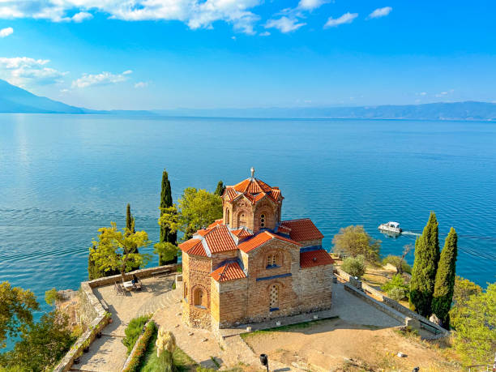
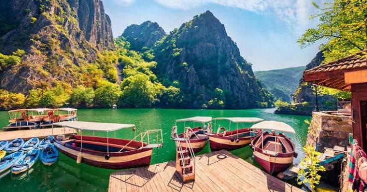
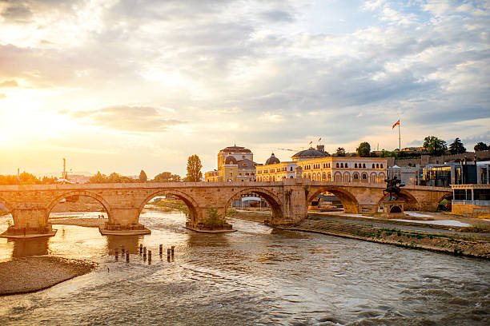
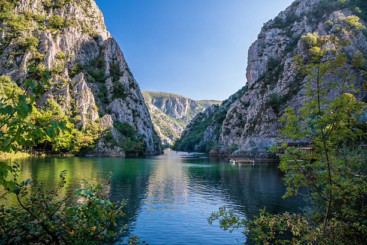
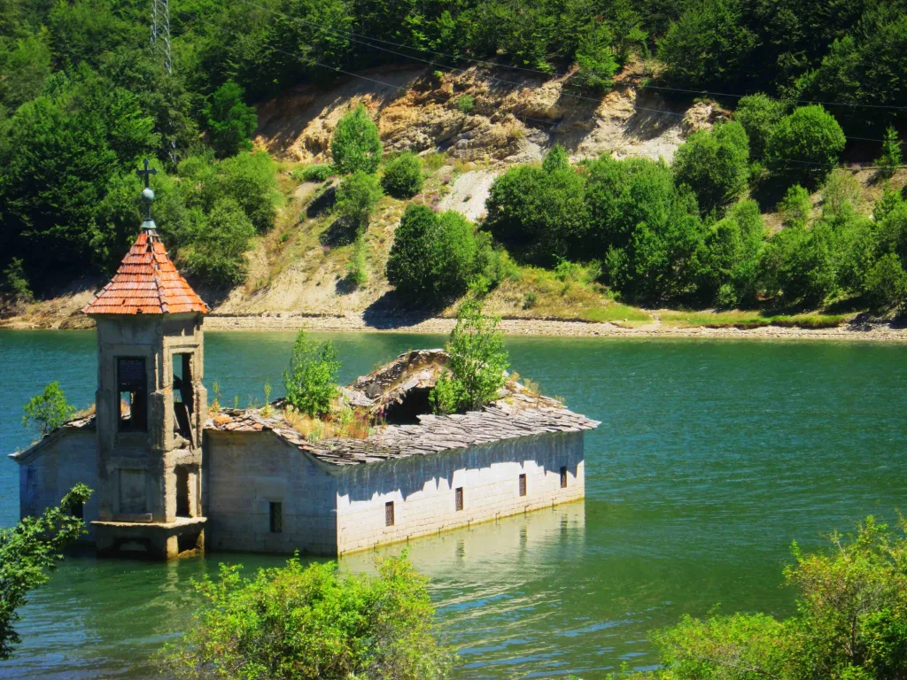
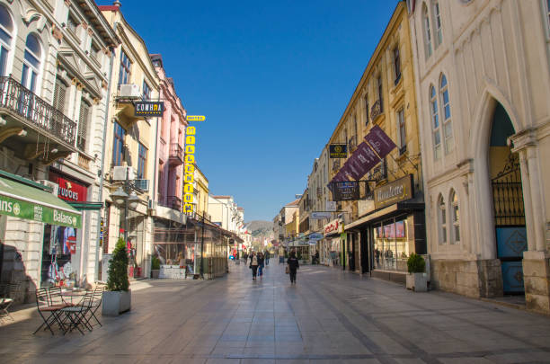
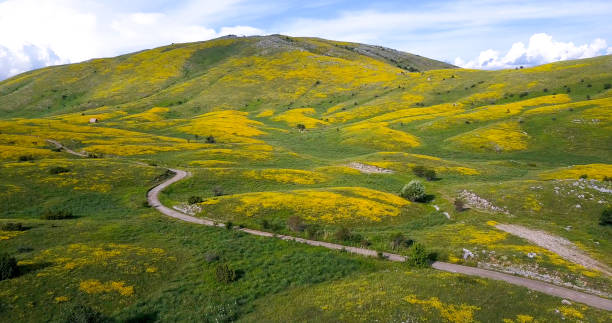
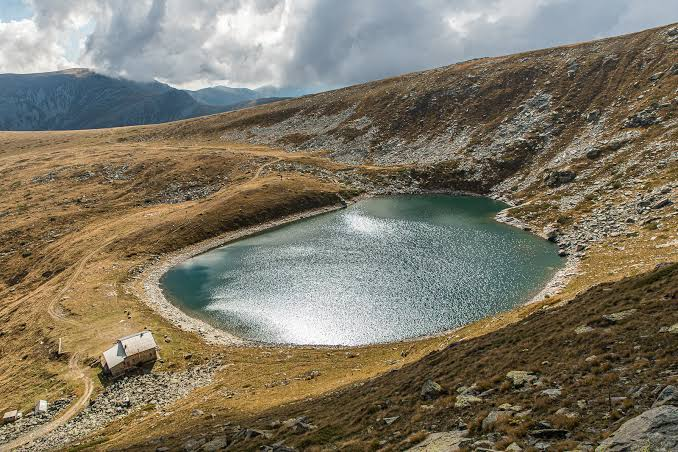
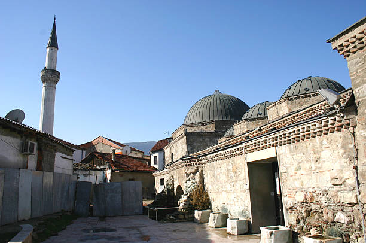

Ohrid
A UNESCO lake town of frescoed churches and clear water. Most first trips give it three nights, and most people wish they'd given it four.
More on Ohrid →
We're a small team who run unhurried, guide-led trips through North Macedonia. Good walking, honest food, and time to sit by the lake and do nothing.
North Macedonia
It's a small country, and that's the point — a UNESCO lake, three national parks, Roman ruins and Ottoman bazaars, and you can get between most of them in an afternoon's drive.
Where to go
Six places we keep coming back to. There's a longer list — and a map — on the Explore page.

A UNESCO lake town of frescoed churches and clear water. Most first trips give it three nights, and most people wish they'd given it four.
More on Ohrid →
An Ottoman bazaar, a modernist rebuild after the 1963 earthquake, and the house where Mother Teresa was born.
More on Skopje →
Half an hour from the capital: a dammed gorge you can kayak, with a cave boat trip and cliff paths at the far end.
More on Matka →
The big western national park — peaks, a reservoir lake with a half-drowned church, and the country's main ski resort.
More on Mavrovo →
The old "City of Consuls" — a long café street, Roman Heraclea on the edge of town, and Pelister rising straight behind it.
More on Bitola →
The highest town in the country. People come up here to paraglide off the ridge and to breathe.
More on Kruševo →Fourteen more places, plus an interactive map. See the full list →
Our tours
Four set routes. Any of them can go private, with the dates, pace and hotels moved to suit you.
Skopje · Matka · Mavrovo · Ohrid · Bitola · Tikveš
If you only come once, this is the one — the bazaar, the canyon, the mountains, three nights on the lake, and a night out in the wine country.
Balanced pace · culture & nature

Galičica · Pelister · Šar foothills
Day hikes and one hut-to-hut section, from the ridge between two lakes to the glacial pools locals call Pelister's Eyes. We move your bags.
Active · moderate hiking
Two more — a slow trip through the south, and a week in the wild west. All four trips & departure dates →
The people
Six guides, and each one grew up in the part of the country they show you. (The circles are placeholders — real photos to follow.)
Skopje & the north
Studied history, then started guiding and never stopped. He can tell you what every statue on the square is arguing about.
Macedonian · English · German · 12 years
Ohrid & the lakes
Grew up on the lakeshore. Runs the boat days, knows which church to save for the evening light, and where the trout is honestly worth it.
Macedonian · English · French · 9 years
Mavrovo, Šar & Tetovo
Mountain guide and ski instructor. Leads the Radika valley routes and the winter weeks at Mavrovo and Popova Šapka.
Macedonian · Albanian · English · 8 years
Bitola & Pelister
Birdwatcher, café regular. Handles the Pelister hikes, the Heraclea ruins, and long afternoons on Širok Sokak.
Macedonian · English · Italian · 7 years
Tikveš & the south-east
From a winemaking family in Kavadarci. Sets up the cellar visits, the Stobi stop, and the ajvar-season lunches near Strumica.
Macedonian · English · German · 10 years
Matka & day-hikes near Skopje
Climber and kayak instructor. Runs the Matka paddles, the Vodno traverse, and the steep bit up to Treskavec.
Macedonian · English · Spanish · 6 years
If you're travelling solo
Put in your interests and your dates, then look through other travellers who'll be in Macedonia at the same time. Match, message, and share a hike, a wine tour, or just the taxi to Matka.
Open Meet Travellers
About us
There are six of us. We plan every trip by hand and lead every one ourselves — no coaches of fifty, no scripted commentary, no gift-shop stops.
The idea is simple: move at a pace a person can actually enjoy, stay in places owned by the people who run them, eat where the guide would eat, and leave gaps in the day for the lake, or the shade, or nothing at all.
Plan a trip with usRough dates, how long you've got, the kind of thing you like. We'll come back within two working days with a draft itinerary — no obligation, no hard sell.
This is a student project — your enquiry is saved only in your own browser and isn't sent anywhere. View saved enquiries